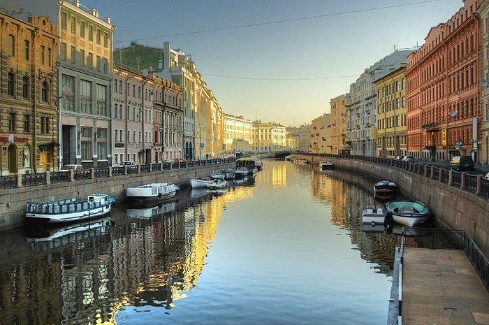
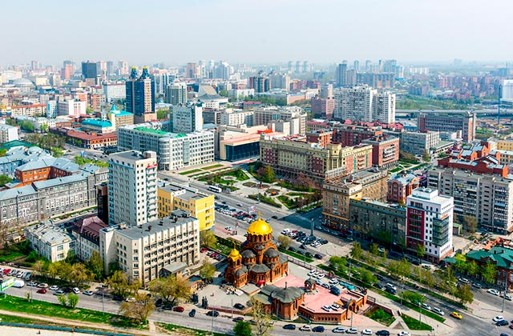

Куда вы хотите съездить?
У вас возникло желание посетить города России, но вы даже представления не имеете о местных достопремичательностях и интригующих местах, памятниках. Так с чего же начать? В данной статье предлагаем вам сузить список возможных точек назначения и начать планировать поездку!
Москва

Достопримечательности Москвы:
История самой известной площади России началась в 1493 году, когда для увеличения торгового пространства под стенами Кремля расчистили полосу шириной в 240 метров. Изначально она называлась Пожаром или Торгом, затем Троицкой, так как в ее южной части стояла церковь Троицы. Красной площадь стала после возведения храма Василия Блаженного. Современный облик начал прорисовываться во второй половине XIX века, с появлением масштабных сооружений – Средних и Верхних торговых рядов, здания Исторического музея. Серьезный идеологический вес площадь обрела уже после революции.
Крепость в центре столицы имеет огромное историко-художественное и общественно-политическое значение. Первые сооружения из дерева здесь появились в 1264 году, когда на этой территории московские удельные князья построили свою резиденцию. Кремль, каким мы его знаем сейчас, начал формироваться во времена правления Ивана III, когда царь решил возвести на Боровицком холме масштабное фортификационное сооружение. Правитель нанял самых известных зодчих из Милана, и они в полной мере оправдали репутацию лучших строителей Европы.
Храм построен в честь освобождения Москвы от польских интервентов в 1625 году. Название собор получил по имени иконы Казанской Богоматери – главной святыни народного ополчения. Церковь горела, перестраивалась, расширялась. В советский период, во времена сталинской реконструкции Манежной площади, собор демонтировали. Однако перед этим архитектор Барановский сделал замеры и фотофиксацию всех деталей храма. Инициатива неравнодушного специалиста позволила спустя годы восстановить здание с максимальной исторической достоверностью.
Датой появления Государственного исторического музея считается 9 февраля 1872 года. В этот день Александр II подписал документ об его основании. Так на Красной площади появилось величественное здание, построенное специально для размещения уникальных экспонатов из российской сокровищницы. Сейчас в 39 залах представлены все этапы истории государства – от каменного века до наших дней. Общая площадь экспозиций – 4 тысячи квадратных метра, всего в коллекциях собрано порядка 250 тысяч экспонатов.
Санкт-Петербург
Достопримечательности Санкт-Петербурга:
Один из самых знаменитых мостов Петербурга. Свое название мост получил в честь полковника-инженера Михаила Аничкова, чей батальон был расположен за Фонтанкой в Аничковой слободе ещё во времена Петра Великого.
Во дворце известного архитектора Штакеншнейдера сегодня находится Музей становления демократии в современной России имени Анатолия Собчака, а также одна из первых в Петербурге выставок восковых фигур. — Невский проспект, 41
Дворец Белосельских-Белозерских был построен в качестве подарка фавориту Елизаветы Петровны Алексею Разумовскому. Из-за своего местонахождения Аничков дворец служил украшением въезда в Петербург, граница которого в середине XVIII века проходила по Фонтанке. После революции в 1937 году в нем открыли Дворец пионеров, который существует и сегодня. — Невский проспект, д. 39
«Книжная лавка писателей» - старейший из книжных магазинов Петербурга был основан еще в 1934 году по инициативе М. Горького и С. М. Кирова. Сегодня в книжной лавке проходят встречи петербургских писателей, поэтические вечера, презентации новых книг и много другое. В скором времени планируется открытие читательского клуба. — Невский проспект, 66
Новосибирск
Достопримечательности Новосибирска:
Здание театра находится на главной площади города. Оно было возведено в 1931-41 годах и сегодня после реконструкции 2005 года считается самой большой и современно оснащенной сценой в России. Сооружение состоит из нескольких частей: внушительные концертный и зрительный залы, вестибюль, сценический блок, помещения для репетиций, склад декораций и административный блок.
Один из крупнейших зоопарков в стране. В нем содержатся более 11 тысяч особей (всего 756 видов), около половины из которых занесены в Красную книгу. Зверинец принимает участие в десятках международных программ по защите и сохранению фауны планеты, а также является членом авторитетных союзов наподобие WAZA и EARAZA. Зоопарк был основан в 1947 году. Ежегодно он принимает до 1,5 млн посетителей.
Академгородок – один из районов Новосибирска, расположенный примерно в 20 км от основной части города. С 1959 года здесь проживали видные ученые и строились всевозможные научные институты. Также тут находится Новосибирский государственный университет. В постсоветское время на территории Академгородка, несмотря на общий упадок, были открыты подразделения крупных международных компаний, что привлекло сюда поток частных инвестиций.
Площадь Ленина - центральная площадь города, на которой располагаются основные достопримечательности: Краеведческий музей, музыкальный театр, сквер, часовня Николая Чудотворца, а также многочисленные памятники. Этим монументам стоит уделить особое внимание: здесь есть железный Трон, Музыкальная шкатулка памяти В. А. Ленского, памятники в честь первого кинотеатра и трамвая, стела «Госпиталь ветеранов».